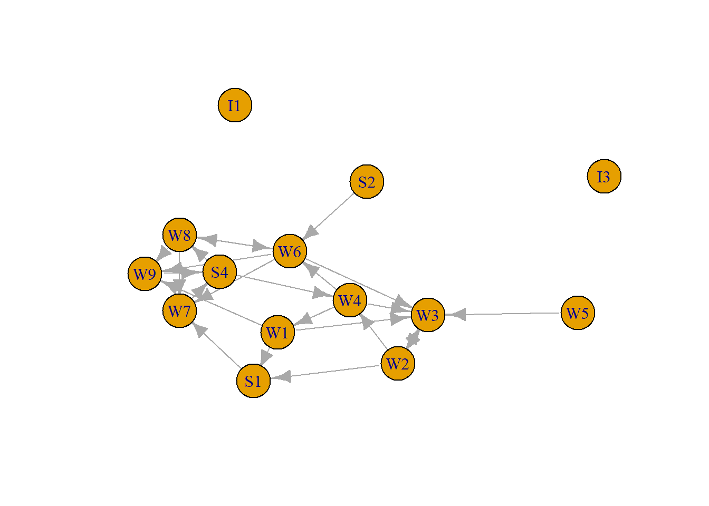
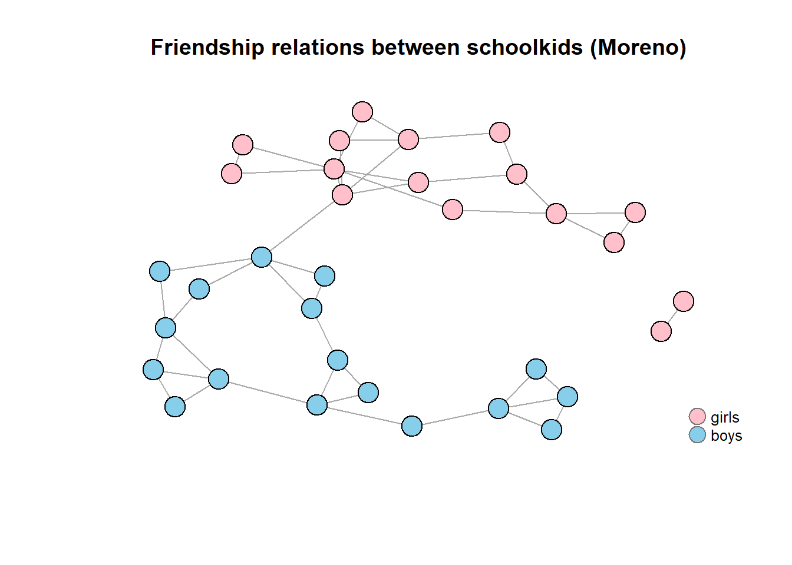
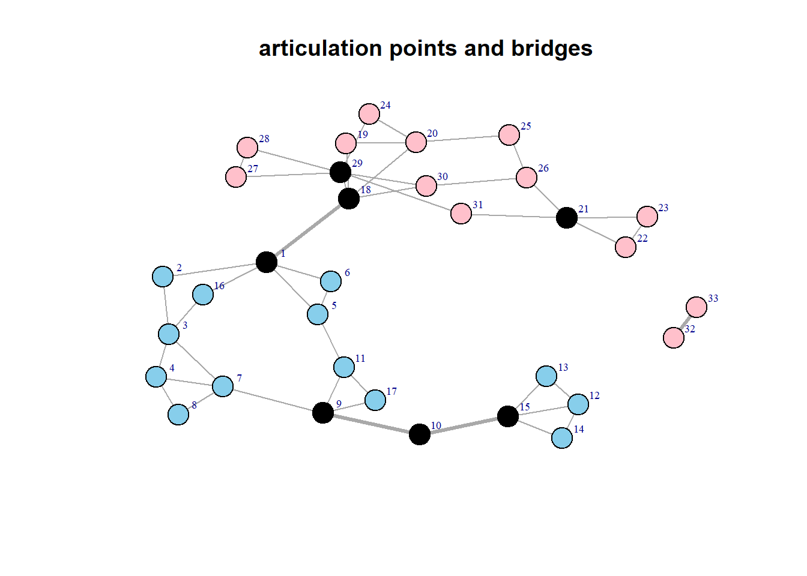
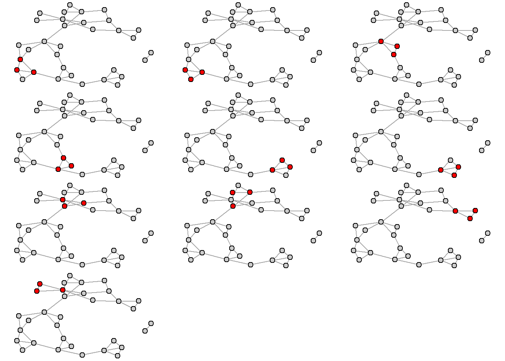
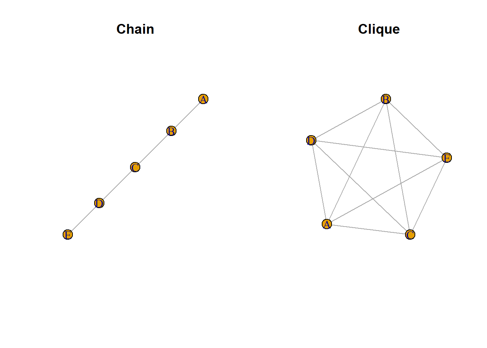
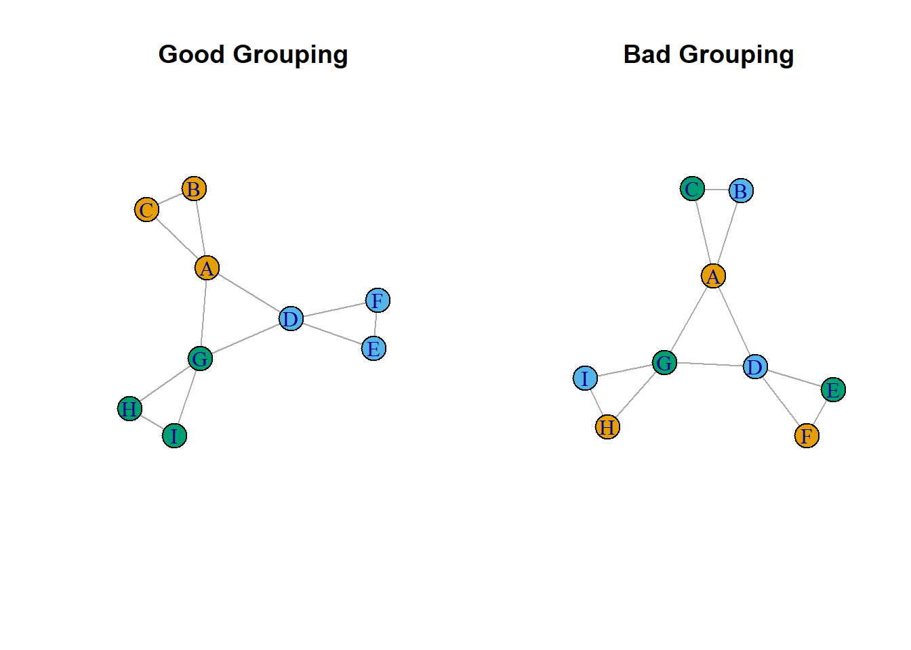
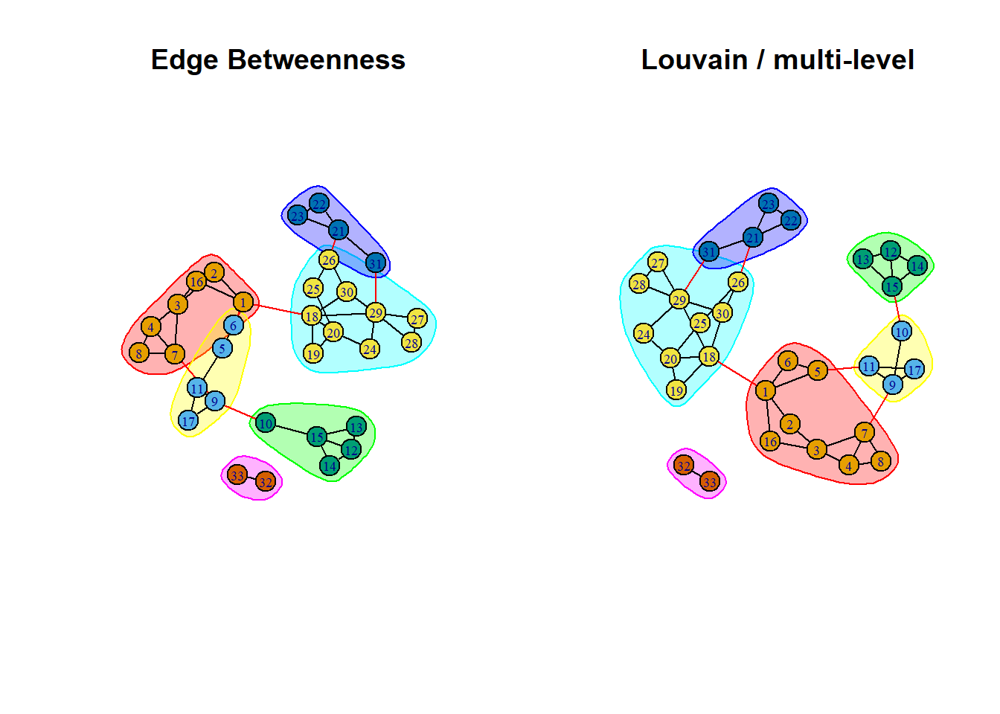

5 Social Cohesion
“[Social solidarity is a wholly moral phenomenon which by itself is not amenable to exact observation and especially not to measurement.” Durkheim
“Segregation now, segregation tomorrow, and segregation forever.” The most vehement rallying cries against racial equality in American history. Reaction to newly elected Alabama Gov. George C. Wallace’s inaugural (hateful) speech Jan. 14, 1963.
This part of the course focuses on the network aspects of social cohesion. We discuss the idea of structural cohesion and learn how to calculate components, cliques, cohesion and find subgroups using specific community detection algorithms.
Intended learning outcomes:
- be able to find components in a graph
- be able to calculate structural cohesion
- be able to find cliques in a graph
- be able to find sub-groups and use community detecting algorithms
One of the main research interest in sociology is describing and explaining the degree of cohesiveness of social relations— or in other words social cohesion. Intuitively speaking researchers want to examine whether societies make up cohesive entities, which exhibit positive ties between its inhabitants and where there is order, trust, solidarity, social support and cooperation between people. Such a cohesive society is then seen as the opposite of a fragmented, disintegrated society, in which there are many conflicts, negative ties, distrust and uncooperative behavior. These are, of course, two extreme opposites. The cohesiveness of social structures is not a matter of either/or but one of degree.
Social cohesion the degree to which individuals and groups have (strongly)
positive relationships with each other, as opposed to no/neutral relationships
or (strongly) negative relationships. Frank Tubergen.What are the relational features that hold collectivities together? Clearly, a collection of individuals with no relations among themselves is not cohesive This is reflected first in the idea of a component, a network in which every actor can reach every other actor.
5.1 Components
The most basic form of a network group is a component. In a connected component, every node is reachable via some path by every other node. Most network datasets have only a single large connected component with a few isolates - however, some unique datasets might have three or four large, distinct components.
In a directed graph, components can be weakly or strongly connected. If node i can reach j via a directed path and j can reach i via a directed path, for all i and j nodes in the component, then we say the component is strongly connected. If all nodes are only reachable from a single direction, (i.e. i can reach j via a directed path, but j can’t reach i), then we say the component is weakly connected.
The decompose.graph function in igraph will take a network and decompose it into its connected components. We can then analyze each component separately.
To illustrate we use again the first organizational network collected, consisting of observational data on 14 Western Electric (Hawthorne Plant) employees from the bank wiring room first presented in Roethlisberger & Dickson (1939). We focus on helping relations (who helps whom), so these are directed data.
$membership
I1 I3 W1 W2 W3 W4 W5 W6 W7 W8 W9 S1 S2 S4
5 4 3 3 3 3 2 3 3 3 3 3 1 3
$csize
[1] 1 1 10 1 1
$no
[1] 5There is one major component, as is most often the case!
Consider Moreno’s sociogram of a school class depicted below (this was one of the earliest networks ever collected). Here, it is self-evident that the network is made up of two primary groups, although the two groups are part of one component.

The two groups are connected by a bridge. In general, a bridge is a direct tie between nodes that would otherwise be in disconnected components of the graph. A bridge is often of major importance in a network (see the strength of weak ties theory). A bridge often connects two articulation points, vertices that when removed, disconnect the network. As can be seen in the figure below, there are four bridges, and six articulation points. Note that vertices 32 and 32 are not articulation points, since removing one of them (and hence the bridge), creates an isolate.
+ 7/33 vertices, from 62ad0d7:
[1] 15 10 9 29 21 18 1+ 4/46 edges from 62ad0d7:
[1] 10--15 9--10 1--18 32--33a<- articulation_points(iMoreno)
b<-bridges(iMoreno)
e<-rep(1,ecount(iMoreno))
e[b]<-3
V(iMoreno)$color[a]<- "black"
#E(edge.width)[g]<-2
plot(iMoreno, layout = lay,
edge.arrow.size=0.3,
edge.width=e,
vertex.color= V(iMoreno)$color,
vertex.size=8,
vertex.label.dist=1.2,
vertex.label.cex=0.6,
main="articulation points and bridges",
asp=0.6)
5.2 Cliques
While there are two clear subgroups (boys and girls) within those groups there are multiple smaller, subgroups of schoolchildren where all children are friends of each other. Such maximally connected groups are called cliques.
The idea of a clique is relatively simple. At the most general level, a clique is a sub-set of a network in which the actors are more closely and intensely tied to one another than they are to other members of the network. In terms of friendship ties, for example, it is not unusual for people in human groups to form “cliques” on the basis of age, gender, race, ethnicity, religion/ideology, and many other things. The smallest “cliques” are composed of two actors: the dyad. But dyads can be “extended” to become more and more inclusive – forming strong or closely connected regions in graphs. A number of approaches to finding groups in graphs can be developed by extending the close-coupling of dyads to larger structures.
The formal definition of a “clique” as it is used in network analysis is much more narrow and precise than the general notion of a high local density. Formally, a clique is the maximum number of actors who have all possible ties present among themselves. A “Maximal complete sub-graph” is such a grouping, expanded to include as many actors as possible.
[1] 3[1] 10# The output of the following two commands is extensive, so lets skip that.
# cliques(iMoreno, min=3) # cliques equal or larger to 3
# maximal.cliques(iMoreno, min=3) #list all cliques equal or larger to 3
# returns a numeric vector representing a histogram of clique sizes, between # the given minimum and maximum clique size.
clique_size_counts(iMoreno) [1] 33 46 10So there are 10 cliques with three children in each clique. Here is a plot of all the cliques. Note that some children are in multiple cliques.

Note that clique size is relatively low (lower than you may have expected). In most social networks the upper limit of the size of a single clique is seven (see Killworth and Bernard, 1974).
5.3 Structural cohesion
The idea that collectivity is structurally cohesive to the extent that the social relations of its members hold it together is somewhat limited. Imagine a set of five actors that are connect via a chain.
par(mfrow=c(1,2))
plot(graph_from_literal(A---B, B---C, C---D, D---E), main="Chain")
plot(graph_from_literal(A---B, B---C, C---D, D---E, A---C,
A---D, B---E, C---E, A---E, D---B), main="Clique" ) 
In the chain network actors are connected via only one path. Intuitively, the ability of the group to “hold together” increases with the number of independent ways that group members are linked. Increasing the number of paths between actors thus seems a way to increase cohesion in the network. However, the increase should not be through one individual actors (a leader), since then the network would become vulnerable again.
[T]he organization of [cohesive] group ties should be distributed throughout the group in a relatively uniform manner. This implies the absence of any substructures that might be vulnerable, such as via a small number of "cut-points" to calving away from the rest of the structure. (Markovsky 1998:345)This idea leads to the idea that cohesion is equal to the minimum number of actors who, if removed from the group, would disconnect the group. The clique network is according to this idea the most cohesive network.
Cohesion is zero since the network is disconnected, so no actors need to be removed. lets now select the largest component and find out the degree of cohesion in this subnetwork.
The figure above (articulation points and bridges) shows clearly that removing only one vertex, results in a disconnected network, hence cohesion is one (and fairly low). Contrast this with the cohesion of a clique (of five).
5.4 Community detection
A “community” can be defined as a cluster of nodes that are more connected internally than externally, either directly and/or indirectly. This differs from components and cliques that relies solely on the internal structure of a group.
5.4.1 Modularity
An important characteristic of a network that is used in many community detection algorithms is that of modularity. Modularity is a measure of the structure of the network, specifically the extent to which nodes exhibit clustering where there is greater density within the clusters and less density between them (Newman 2006). Modularity can be used in an exploratory fashion, where an algorithm tries to maximize modularity and returns the node classification that is found to best explain the observed clustering. Conversely, modularity can be used in a descriptive fashion where the modularity statistic is calculated for any node classification variable of interest. For example, an analyst can calculate the modularity score for a friendship network given the gender of network members. Used this way, modularity reflects the extent to which gender explains the observed clustering among the friends in the network.
Modularity is a chance-corrected statistic, and is defined as the fraction of ties that fall within the given groups minus the expected such fraction if ties were distributed at random. The modularity statistic can range from −1/2 to +1. The closer to 1, the more the network exhibits clustering with respect to the given node grouping.
Consider the following simple example of a network with nine nodes. We have two categorical vertex attributes which each classify the nodes into three groups
op <- par(mfrow=c(1,2))
plot(g1,vertex.color=(V(g1)$grp_good),
vertex.size=20,main="Good Grouping")
plot(g1,vertex.color=(V(g1)$grp_bad),
vertex.size=20,
main="Bad Grouping")
As the figure suggests, the clustering that is evident in the network is better accounted for by the grp good node attribute compared to the grp bad variable. This can be confirmed by calculating the modularity score provided by the modularity function in igraph.
Real-world social networks are often characterized by clustering, but it is of course harder to judge the extent of the clustering by eye. Earlier we saw that there was interesting subgroup structure contained in the Moreno network.
The network exhibits clear clustering based upon gender. The groups show clear modularity, and can be called a “community”.
5.4.2 Community Detection Algorithms
Igraph supports several community detection algorithms.In the lecture the edge-betweenness algorithm has been discussed. This algorithm has intuitive appeal and works well, especially when the network size is not too large, and there is a reasonably clear clustering (that is: the proportion of each nodes links which link outside its community is not too high).
The linked article compares popular algorithms( https://www.nature.com/articles/srep30750). Its conclusion is that the multi-level aka the Louvain algorithm overall performs best. It is a different “greedy” approach for optimizing the modularity with respect to the “Fastgreedy” method. The Louvain algorithm partitions a graph into subsets of vertices by trying to maximize the modularity of the graph.
- The algorithm starts its first phase with each vertex in its own community.
- Vertices are moved into other communities, and modularity is calculated. When the algorithm reaches a point where further vertex moves do not increase modularity, it finishes its first phase.
- In its second phase, the communities resulting from the first phase are aggregated to form a simpler pseudograph where each vertex represents a community. In this heuristic step, vertices are moved in this simpler graph with the aim of improving modularity. That is, communities may be combined if modularity is improved.
- The first and second phases are repeated until modularity cannot be further improved.
 Lets compare the Louvain and edge betweenness algorithms.
Lets compare the Louvain and edge betweenness algorithms.
[1] 0.6216919 [1] 1 1 1 1 2 2 1 1 2 3 2 3 3 3 3 1 2 4 4 4 5 5 5 4 4 4 4 4 4 4 5 6 6plot(ceb, iMoreno,vertex.label=V(iMoreno)$name,
vertex.label.cex=.6,
main="Edge Betweenness")
ceba <- cluster_louvain(iMoreno)
modularity(ceba)[1] 0.629017 [1] 1 1 1 1 1 1 1 1 2 2 2 3 3 3 3 1 2 4 4 4 5 5 5 4 4 4 4 4 4 4 5 6 6
As you can see the outcomes are close, only three vertices are classified differently. The modularity of the Louvain solution is a tiny bit better.
5.4.3 Network structure and jargon
Recall that in part 3 we discussed the so-called “Bavelas-Smith-Leavitt experiments” that were used to study how network structure could affect team problem solving. See the figure below that gives a quick summary of the original experiment (from Burt et al. 2022). Five subjects are assigned at random to positions in the four displayed communication networks. 
Recall that five subjects were assigned at random to positions in the four displayed communication networks. The networks are simplified in that connections are all or nothing (no variable-strength connections). Each subject is given a card containing five of the six symbols displayed at the top of the figure. One symbol is on all five cards. The team coordination task is to determine, as quickly as possible, which symbol is on all five cards. Seated around a card table passing written notes, subjects communicate through connections displayed in the figure.
In a subsequent replication of Burt et al (2022) the tasks was made more complex. In the original experiment, teammates coordinated with respect to familiar shapes (circle, triangle, diamond, square, plus, star). In the renovated experiment, subjects coordinate with respect to six “tangram” symbols that were previously used in the study of language coordination. To coordinate on these symbols, teammates have to agree on a language by which symbols can be identified. The symbols are shown in the figure below. The tangrams are listed in order of increasing variation in the jargon used by the teams to describe the symbols. So teams agreed quite often about the language to denote the first symbol “bunny”. Most common jargon for a symbol is listed under symbol with percent of teams using that jargon and number of other terms used as jargon. Rows below symbol list jargon words from diverse teams as illustration.

From the results depicted in the Figure below it is clear that in better connected groups, more jargon is created (and thus used). Horizontal bars indicate median jargon use within each team network. Words used in the initial and final trials for the four labeled teams are given in the indicated figures. Numbers in the network sociograms indicate seven positions in the assigned networks. Parentheses contain mean percent jargon, mean team messages per trial during the final trials, and number of teams averaged. The four assigned networks are presented in order of increasing concentration in a single teammate (respectively 40%, 50%, 57%, and 100%).

5.4.4 Roles and the evolution of networks
In our 0HV80 course we mainly discuss static structures of networks. This is an obvious simplification of reality. Networks evolve and so do the roles people play in networks.In our first lecture, research of Johnson et al (2003) was introduced. This research was conducted at the Amundsen-Scott South Pole Station. Data were collected on crewmembers’ networks of social interaction over each of three winter-over periods, when the station is completely isolated. In addition, data were collected on the informal roles played by crewmembers (e.g., instrumental leadership, expressive leadership).

In the figure the three winter-over years can be found, along with a score that indicates how coherent the network was during that period. The network in year C was less coherent, coherence is the extent to which a network forms a single group composed of a unitary core and periphery as opposed to being factionalized into two or more subgroups. Coherence is associated with consensus on critical informal social roles, and above all the critically important role of instrumental leader.
Johnson et al. found that the globally coherent networks (year B and C) in winter-over groups were associated with group consensus on the presence of critically important informal social roles (e.g., expressive leadership). Weak leadership has been associated with catastrophic failure in polar expeditions and with low morale in other isolated settings. Effective leadership is based on prior experience, articulation of goals, flexibility, and degree of interaction with other winter-over personnel. Data obtained on leaders of previous Antarctic winter-over crews indicated that evaluations of effective leadership were based on the ability of individuals assuming these roles to minimize group conflict, effectively address problems such as abusive or alcoholic station members before they began to affect station morale, keep projects on schedule without overworking personnel, make calm and rational decisions during an emergency, be fair and impartial particularly in conflicts between navy and civilian personnel, and maintain a certain level of communication with other winter-over personnel through work-related and social activities without becoming too “chummy.” Leaders lacking these abilities were harshly criticized and blamed for low moral, group conflict, and inability to successfully complete projects with a minimum of mistakes.
Early on, Hall (1955) recognized the crucial importance of members’ agreement on group roles for producing coherent groups. In the absence of role consensus, we find ‘‘role collision,’’ described by Hare (1976) as a ‘‘type of conflict which may occur if two different individuals in a group perform roles which overlap in some respects.’’ Heterogeneity can produce effective groups by simply reducing the potential for role collision. The value of status and role heterogeneity is counterposed by the potential corrosive effect of heterogeneity in group members’ backgrounds (e.g., nonscientists vs. scientists) and other characteristics (Bernard and Killworth, 1973; Johnson and Finney, 1986; Palinkas, 1989a).
In addition to effective leadership, which is a high status role, deviants or low status individuals play an important role in the coherence of small networks. Deviant roles (“clowns”) emerge in many enduring groups, especially those in isolation (e.g., military and work groups; Antarctic exploration groups, and isolated commercial fish camps). The deviants in these examples function positively: promoting group solidarity, reducing boredom, and inhibiting group conflict. Deviance is not only a natural part of social groups; it is institutionalized, accepted, and rewarded. The positive functional aspects of such low status positions can make a considerable contribution to producing harmonious and effective small groups. Just as “charismatic” leadership is important, so too is the presence of ‘‘charismatic’’ deviance. Occupants of such a social position will function in roles that provide a common reference point (e.g., mascot) for all other group members, thereby promoting group cohesion. This role will typically manifest itself in humor and joking behavior. Such behavior is essential for coping with boredom brought about by prolonged periods of isolation.
There is abundant anecdotal evidence that lower social statuses have been important in past Polar expeditions. For instance, on his Antarctic expedition, Amundsen brought with him a cook named Lindstrom. As “Chef, baker, pastry-cook he provided surrogate domesticity. He was also instrument maker, taxidermist, housepainter . . . and clown.” In his marginal social position as cook, Lindstrom provided not only food, but also humor and comic relief, and greatly contributed to group harmony during the long winter. Because of his marginal position, Lindstrom was able to play the role of clown or court-jester without fear of any sanctions. Thus, inter-personal and inter-subgroup conflicts were reduced by the inclusion of this single member. In a study of Italian commercial fishermen in an isolated camp in Alaska, Johnson and Miller (1983) and Johnson and Finney (1986) described the example of a deviant member (i.e., the worst fisherman of the group) who helped to mitigate conflict between the two major subgroups within the network of fishermen. During the fishing season of 1980, a strike had idled most of the fishermen in the camp. This was a period of boredom, high stress, and high potential for inter-personal and inter-subgroup conflict. However, the deviant, because of his status and personal characteristics, emerged in the role of “court jester,” providing comic relief and a common reference point for all group members irrespective of subgroup affiliation. The other fishermen made fun of him, played pranks on him, and made him a fun topic of conversation. He was rewarded for his role and received valuable salmon as compensation. He maintained moderate proximities among members of both subgroups. His role was important in minimizing conflicts during this tense period. As other group members described him: “He is the bridge between the two groups,” and “He belongs to everyone.”
5.5 Exercise
We use the same data that was used in part 3. Edges are in “Freeman’s_EIES.xlsx”. Nodes in “Freeman_EIES_Attribute.xlsx”.
The data arose from an early experiment on computer mediated communication. Fifty academics interested in interdisciplinary research were allowed to contact each other via an Electronic Information Exchange System (EIES). The data collected consisted of all messages sent plus acquaintance relationships at two time periods (collected via a questionnaire).The data includes the 32 actors who completed the study. In addition attribute data on primary discipline and number of citations was recorded. TIME_1 and TIME_2 give the acquaintance information at the beginning and end of the study. This is coded as follows: 4 = close personal friend, 3= friend, 2= person I’ve met, 1 = person I’ve heard of but not met, and 0 = person unknown to me (or no reply). NUMBER_OF MESSAGES is the total number of messages person i sent to j over the entire period of the study. The attribute data gives the number of citations of the actors work in the social science citation index at the beginning of the study together with a discipline code: 1 = Sociology, 2 = Anthropology, 3 = Mathematics/Statistics, 4 = other.
Plot the network of close personal friends (so only code 4!) include department information.
How many components does the network have? Find and plot articulation points.
Perform a community detection analysis on the network of close friend relationships. Visualize the communities. What is a better grouping, the department grouping or the communities?
Select the main component. Does the edge betweenness clustering algorithm produce the same result as the louvain algorithm? Plot both results in one figure.
Now include not only the close personal friends, but focus on all friendships (so code 3 should be included, just as in the exercise of part 3. What is the cohesion of this network?
What is the maximum clique size of the network of friends? How many of those cliques are there? Plot the largest clique(s)